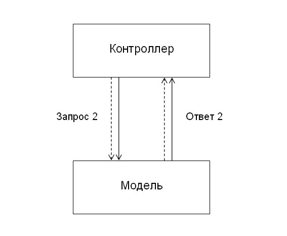

Шаблон проектирования MVC предполагает разделение данных приложения, пользовательского интерфейса и управляющей логики на три отдельных компонента: Модель, Представление и Контроллер – таким образом, что модификация каждого компонента может осуществляться независимо.
Модель (данные)
служит для извлечения и манипуляций данными приложения
--
Контроллер .h .m
управляет передачей информации
--
Представление .xib
отвечает за видимое пользователю отображение данных
Архитектурный паттерн MVC (Model, View, Controller)
Классическая схема веб-приложения:
условно пунктиром обозначены заголовки HTTP-запроса и ответа, а сплошными линиями – их тела.

Вы можете проектировать своё приложение по MVC, при этом не применяя ООП, и спроектировать Модель Товар для интернет-магазина таким образом:
<?
mixed Product_Load (int $id) { ... }
// возвращает ассоциативный массив с данными о Товаре либо FALSE при неудаче
bool Product_Save (array $data) { ... }
// возвращает TRUE при удачном сохранении данных $data, либо FALSE при неудаче
?>
Листинг 1. Шаблон product.tpl.php отображает данные о Товаре (которые к моменту его вызова уже содержит объект $product):
<!-- HTML.header -->
<h1><?=$product->Title;?></h1>
<p>Цена:<b class="price"><?=$product->Price;?></b></p>
<p class="description"><?=$product->Description;?></p>
<!-- HTML.footer -->
Листинг 2. Шаблон error.tpl.php отображает сообщение об ошибке (которое содержится в переменной $error):
<!-- HTML.header -->
<h1 class="error">Ошибка: <?=$error;?></h1>
<!-- HTML.footer -->
Листинг 3. Контроллер product.php, служащий для отобоажения Товара, будет выглядеть примерно так:
<?
include 'product.class.php';// в этом файле декларируются методы Модели Товар
// определение этой функции в контроллере, конечно, неправильно
// в данном случае она здесь только для наглядности
function Error ($error) {
// выводит сообщение об ошибке и завершает работу контроллера, примерно так:
header('Правильный статус ошибки, например, 400 или 404');
$error = 'Соответствующее ошибке сообщение пользователю, например, Страницы не существует';
include 'error.tpl.php';// шаблон для отображения ошибки
exit;
}
if (!$id = ...)// проверка "общей" валидности Запроса 1
error(...);
// проверка прав доступа
if (!$user->Access(...))
error(403);
if (!$product = Product::Load($id))// Запрос 2 и анализ Ответа 2
error('Тут скорее всего случилась ошибка БД');
include 'product.tpl.php';// Запрос 3 и Ответы 3 и 4
?>